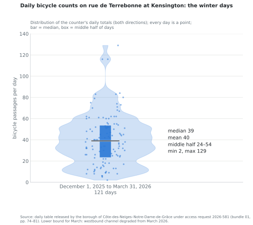

1How many use it, month by month
135,276 passages in the first year
July 26, 2025 – July 25, 2026 · 371 a day · both directions
| Month | Median / day | Mean / day | Motor vehicles / day |
|---|
| Aug 2025 | 679 | 658 | 1,215 |
| Sep | 772 | 729 | 1,343 |
| Oct | 504 | 496 | 1,397 |
| Nov | 168 | 207 | 1,458 |
| Dec | 37 | 40 | 1,248 |
| Jan 2026 | 34 | 33 | 1,243 |
| Feb | 34 | 35 | 1,363 |
| Mar | 52 | 54 | 1,396 |
| Apr | 235 | 275 | 1,523 |
| May | 486 | 471 | 1,598 |
| Jun | 750 | 747 | 1,451 |
| Jul | 690 | 678 | 1,312 |
- Winter, December 1 to March 31: 4,891 passages, 40 a day, 121 days, no day without a bicycle (lowest 2, highest 129); usually between 25 and 75 (81 of 121 days).
- Rest of the year: 534 a day. Motor traffic: 1,375 a day over the year, down from 6,300 in 2022.
Source: daily table, access request 2026-581, bundle 01, pp. 74–81. Lower bound: three outage days in May 2026.
2Speeds on a 30 km/h street
35–39 km/h
V85 at King Edward, winter – summer (the speed 85 % of cars stay under)
34–37 km/h
V85 at Draper, winter – summer
| Sensor | Season | V85 (median of hours) | Cars over 30 km/h | Cars over 40 km/h |
|---|
| King Edward | Winter | 35 | 27 % | 11 % |
| King Edward | Summer | 39 | 32 % | 16 % |
| Draper | Winter | 34 | 34 % | 6 % |
| Draper | Summer | 37 | 55 % | 5 % |
- With the lane in place and one 3.5 m traffic lane, the 85th-percentile speed already sits at or above the 30 km/h limit on both segments, in every season.
- Roughly one car in three at King Edward and one in two at Draper passes above the limit; one in six at King Edward is over 40 km/h in summer.
Source: Telraam S2 sensors at King Edward (west of Cavendish) and Draper (east of Cavendish), hourly data Aug 2024 – May 2026, daylight hours with at least 20 cars. Camera-based speed estimates; winter = Dec–Mar, summer = Jun–Aug.
3What was said, and what the counter shows
Said at council, Oct 6, 2026
99 %
"We go from 700 during the good months to 8. That's 8 passage, right? So that's 4 cyclists, right?"
The 8: six peak hours on one day, January 29, 2025, from a temporary camera at Grand. The 700: a September count on a different slide, all four approaches.The borough's own counter
40 a day
in winter, 534 a day the rest of the year: a drop of
93 % per day, not 99 %. No winter day under 2 bicycles. The councillor himself put it at "40 a day to 30 a day" on CBC (Oct 9).
Said at City council, Oct 19, 2026
3.6 %
"of overall cycling traffic" in the four winter months.
4,891 ÷ 135,276: winter's share of the year's passages. With use identical every day of the year, this formula would still read 33 %.Counted per day
7.6 %
Winter use per day is 7.6 % of the rest of the year (40 against 534), 10.9 % of the annual average. The denominator of "3.6 %" is 244 days that are not winter.

Quotations checked by ear against the recordings (Oct 6 webcast 0k_KZf9uxTk; Oct 19 webcast rii3nUTuKRE, 41:44 and 7:38:24; CBC Daybreak Oct 9, 07:03).
4The weather: last winter, and the day behind the "8"
185 cm of snow
Dec 1, 2025 – Mar 31, 2026, Trudeau airport
24 days ≥ 2.5 cm
3 days ≥ 10 cm · 11 days at −20 °C or below · coldest −25.1 °C
30 snow-loading days
in the lane's sector (CDN-301); the season's loading volume was the second-lowest of eleven
- January 29, 2025, the day of the "8": 7.4 cm of snow, high −8.2 °C, low −14.7 °C, gusts to 40 km/h, under an Environment Canada winter weather advisory. The same temporary camera recorded cars on the Terrebonne approaches down 23 % and pedestrians down 26 % from its November count.
- The citizen sensors on that day still counted 21 bicycles at King Edward and 57 at Draper in daylight, both directions, against 11 and 22 the day before.
- Last winter, 72 % of the eastbound winter passages at Kensington were made on days with no snow-removal constraint on parking.
Sources: Environment Canada daily data, station 7025251; City snow-loading open data; Miovision tables, 2026-581 bundle 01, pp. 82–164; Telraam hourly exports.
5The timeline: decisions and requests of the current administration
- Feb 5 and 19, 2024 Borough (3–2) and City council (unanimous) approve the protected lanes; built May–June 2024 with City funding.
- Nov 2, 2025 Municipal election; new borough administration.
- Jun 10, 2026 Borough engineers write that the elected officials' objective is to restore the parking lane; two concepts already reviewed internally; an "official, neutral, external" opinion wanted.
- Jun 17 The City's street-design service (SUM) replies: the options "présentent plusieurs compromis importants sur le plan de la sécurité, du confort des usagers vulnérables et de la cohérence du réseau cyclable" (borough's own summary, Jun 22). Analysis withheld.
- Jul 13 Fire department (SIM) opinion delivered; released fully redacted.
- Aug 13 Mayor's office mandate in writing: a permanent bidirectional lane on one side, parking restored on the other.
- Aug 20 Service request adds the winter removal as "mesure transitoire pour l'hiver 2026-2027" (Volet 1) ahead of the permanent plan (Volet 2).
- Aug 25–26 EXP offer and purchase order: $14,755, six weeks; council date fixed in advance. Storm-only closure listed among the scenarios.
- Sep 3 → Oct 2 Kick-off; draft Sep 17; final note due Oct 2.
- Oct 6 Council address: "99 %", "8 … 4 cyclists"; "this is what we're going to propose"; "it's going to be a test"; changes "before Christmas 2026".
- Oct 9 Access request answered (508 pages; three key documents withheld). CBC interview: "40 a day to 30 a day"; "at least 50 to 60" spaces; "for now … permanent".
- Oct 19 City council: "3 %" / "3.6 %"; "On n'a aucun problème à partager nos documents"; Le Devoir: the mayor's office writes "d'avril à décembre" kept, "au moins 60 places".
- Dec 7, 2026 Borough council vote (18:30). Then City council (Dec 14–15), then back to the borough.
Sources: council records CA24 170018, CM24 0179; access request 2026-581 (bundle 01, pp. 1–26); council webcasts; CBC Daybreak Oct 9; Le Devoir Oct 19. Documents and transcripts: github.com/OpenMobilityData. Prepared from public records for residents of Côte-des-Neiges–Notre-Dame-de-Grâce; figures reproducible from the Terrebonne-access-requests (2026-581) and Terrebonne-telraam repositories.